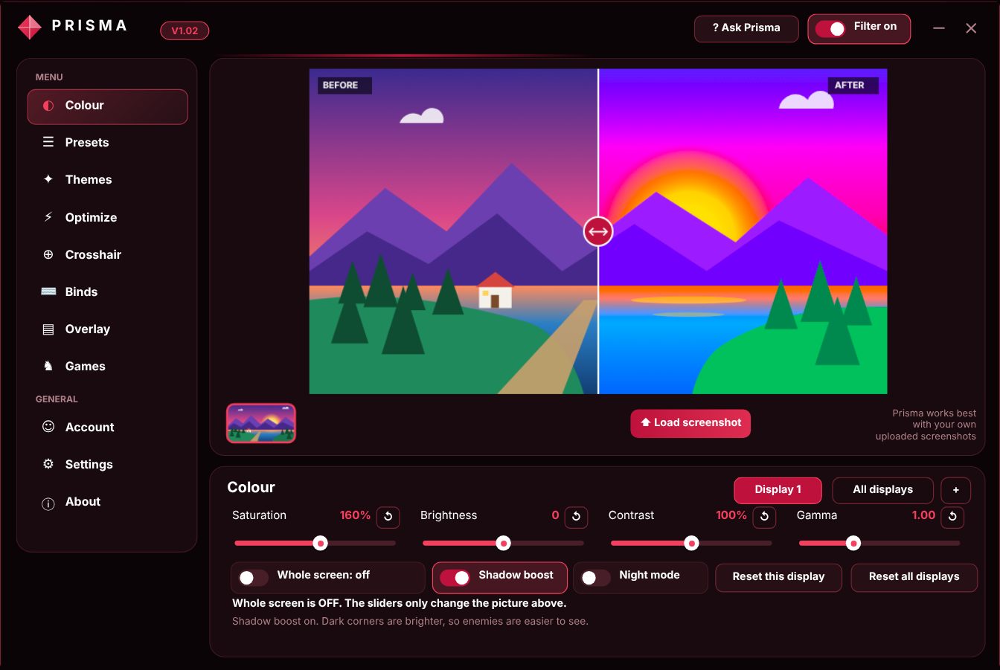
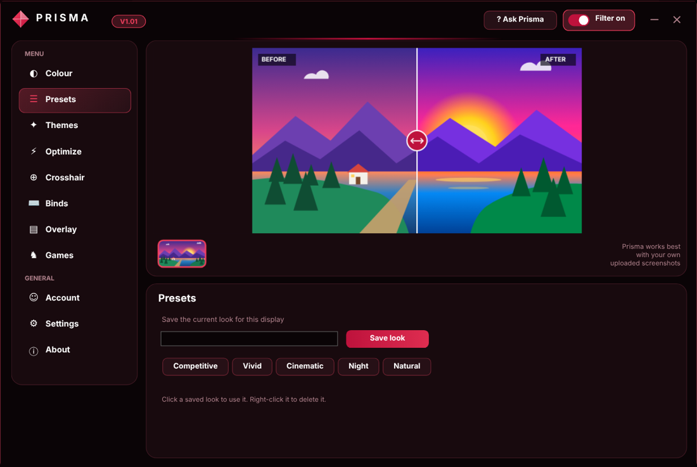
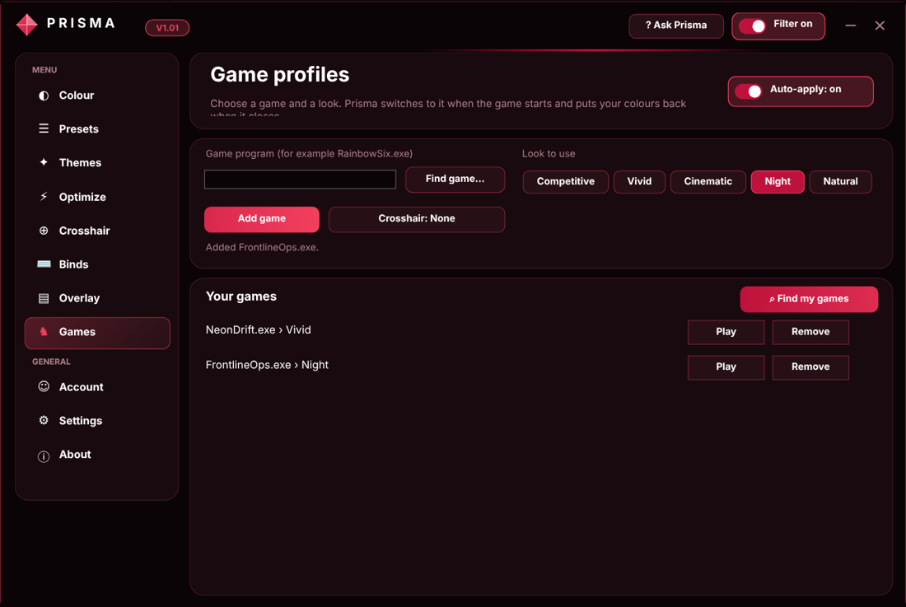
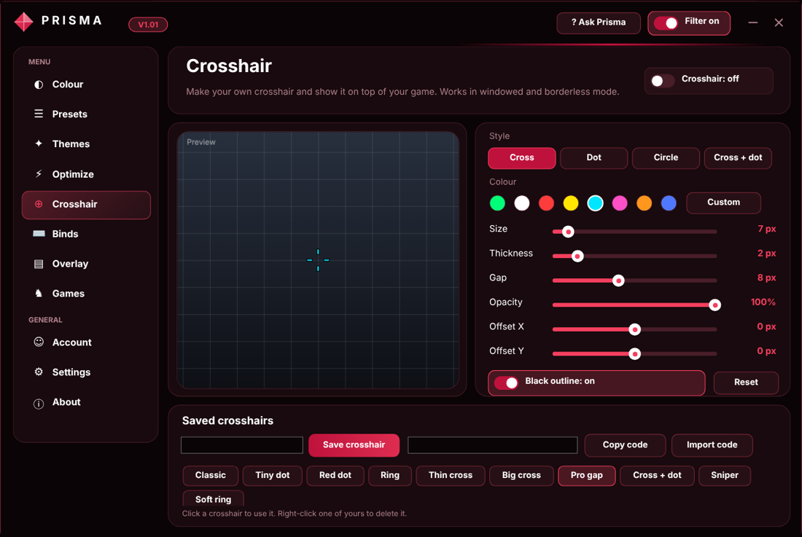
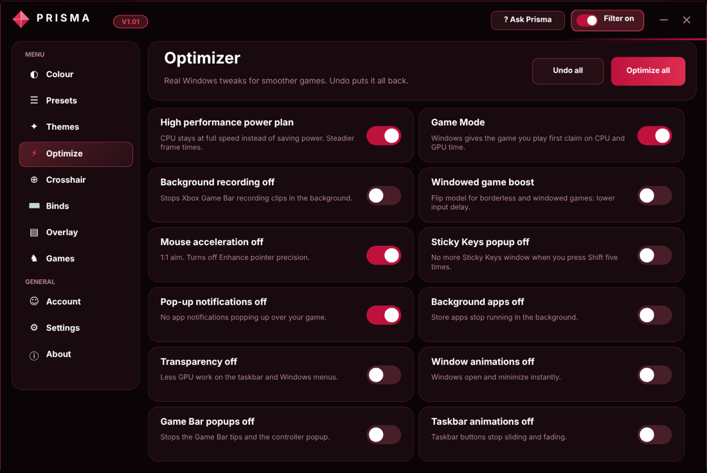
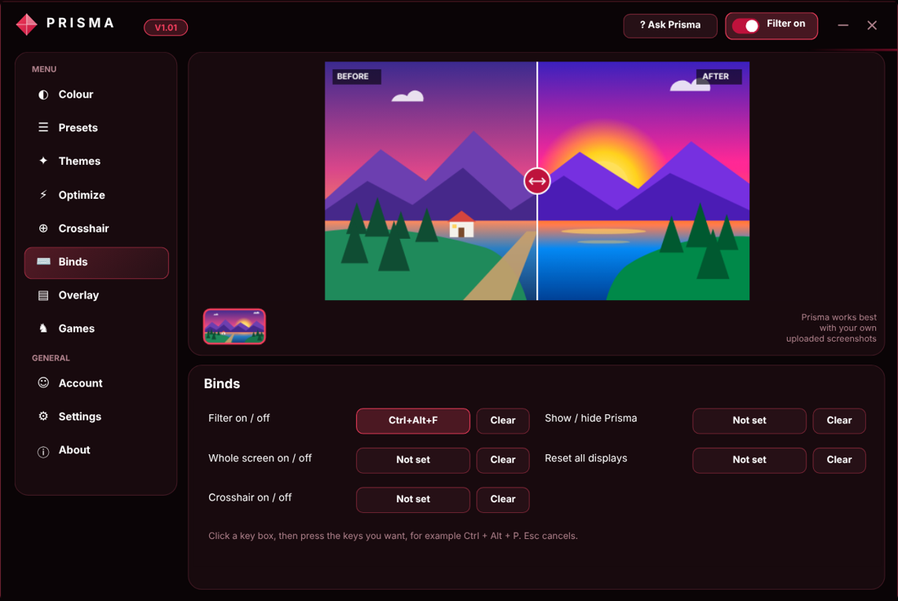
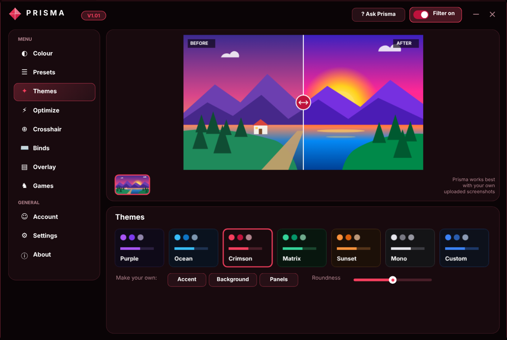
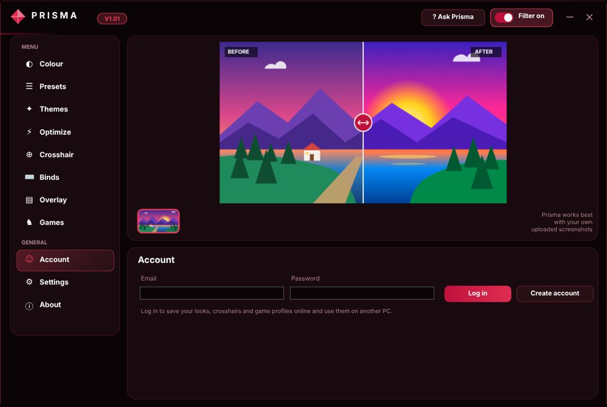
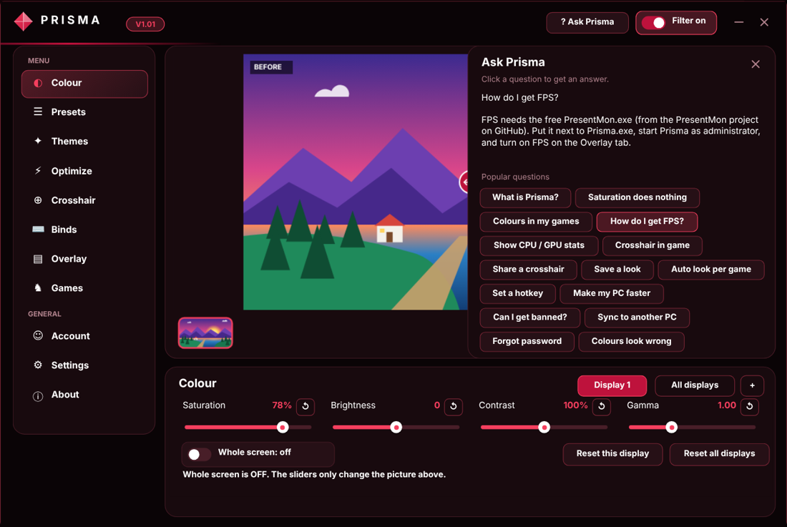
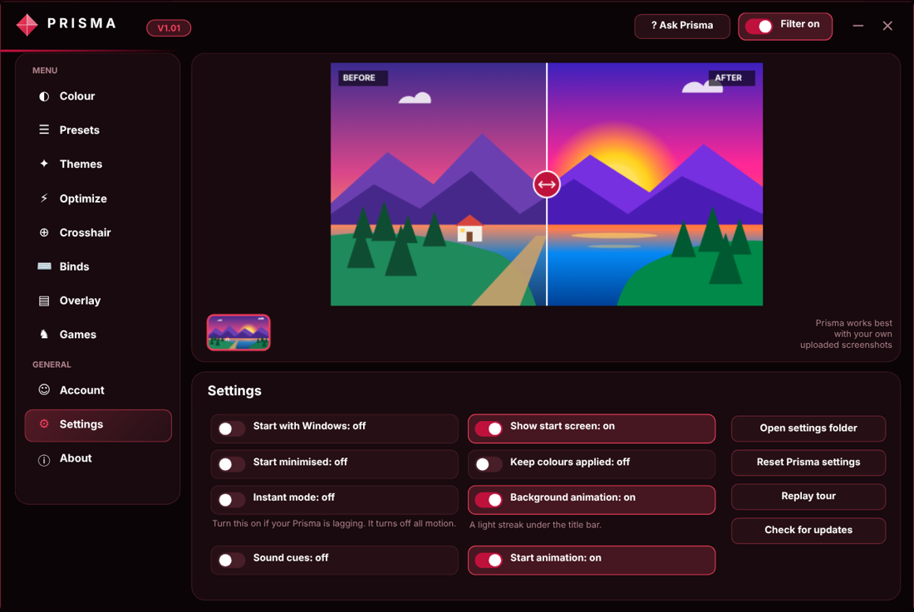

Everything Prisma can do
Every screen in the app, with what each part does.
Colour
Change how your whole screen looks.
- Saturation up to 300%: up to 100% through your NVIDIA driver (digital vibrance), above that a Windows colour boost on top. Works without NVIDIA too.
- New: Shadow boost: dark corners get brighter, bright parts stay the same. Spot enemies in the shadows.
- New: Night mode: warmer colours and less blue light for late gaming.
- Brightness (−100 to +100, keeps black black), Contrast (50–150%, soft punch without lost detail) and Gamma (0.50–2.00).
- Whole screen: apply your look to your real monitor and your games. Turn it off for normal colours.
- Filter on/off button at the top to compare quickly.
- Before / after preview: drag the line over the picture to compare.
- Load screenshot: test your look on your own game pictures.
- Every monitor has its own settings, or use All displays to change them all at once.
- One-click reset per slider, per display or for all displays.

Presets
Save looks you like.
- 5 built-in looks to start with: Competitive, Vivid, Cinematic, Night and Natural.
- Give your own look a name and press Save look.
- Click a saved look to use it again. Right-click to delete it.
- Looks are used by Game profiles and can be synced with your account.

Game profiles
The right look for every game, automatically.
- Find my games lists your installed Steam and Epic Games games. Click one to add it.
- Or add a game by its program name (for example
RainbowSix.exe) or with Find game…. - Pick a look and a crosshair for that game.
- When the game starts, Prisma switches to that look. When it closes, your normal colours come back.
- Auto-apply on/off, and a Play button to start the game from Prisma.

Crosshair
Your own crosshair on top of any game.
- 4 styles: Cross, Dot, Circle and Cross + dot.
- 10 built-in crosshairs: Classic, Tiny dot, Red dot, Ring, Thin cross, Big cross, Pro gap, Cross + dot, Sniper and Soft ring.
- 8 colours plus any custom colour.
- Size, thickness, gap, opacity, offset X / Y and a black outline.
- Live preview, save your own crosshairs, and share codes (
PRISMA-XH1-…) for friends. - Works in windowed and borderless games. Click-through, so it never blocks your mouse.

Overlay
Your PC stats while you play.
- Shows CPU use, GPU use, RAM, GPU temperature, video memory and FPS.
- New: Ping, Clock and Playtime (counts from when your game starts).
- Pick any corner, text size (9–24 pt) and opacity.
- GPU numbers use your NVIDIA driver. FPS needs the free PresentMon.exe next to Prisma.exe and Prisma started as administrator.

Optimizer
20 real Windows tweaks for smoother games. All can be undone.
- High performance power plan · Game Mode · Background recording off · Windowed game boost
- Mouse acceleration off · Sticky Keys popup off · Pop-up notifications off · Background apps off
- Transparency off · Window animations off · Game Bar popups off · Taskbar animations off
- Menus open instantly · Windows tips off · Faster key repeat · Faster startup apps
- Fullscreen optimizations off · Visual effects: best performance · Crash popups off
- New: Game mode: one click frees RAM, turns on Game boost and your colours. Press it right before you play.
- Game boost: your games get high CPU priority and the best graphics card when they start.
- Optimize all in one click, or turn single tweaks on and off. Undo all puts everything back.
- Tools: Free up RAM, Clean temp files, Empty recycle bin and Flush DNS cache.
- Tweaks that need a restart say so, so you know when they kick in.

Binds
Control Prisma without leaving your game.
- Hotkeys for: Filter on/off, Whole screen on/off, Crosshair on/off, Show/hide Prisma and Reset all displays.
- Use any key with Ctrl, Alt or Shift, for example
Ctrl + Alt + F. - Prisma tells you if another program already uses that key.

Themes
Make Prisma look the way you like.
- 7 themes: Crimson (default), Purple, Ocean, Matrix, Sunset, Mono and Custom.
- Custom: pick your own accent, background and panel colours.
- Roundness slider for how round the corners are.

Account & sync
Your setup on every PC.
- No account needed to use Prisma. A free account is optional, for syncing. It's the same account as on this website.
- Upload your looks, crosshairs and game profiles. Download them on another PC.
- Safe login: 5 wrong tries, then a 5 minute wait. Forgot your password? Reset it by email.
- Delete your account and data any time on the website.

Ask Prisma
Help built right in.
- Press ? Ask Prisma and click one of 20 popular questions to get the answer.
- Covers colours, presets, crosshair, overlay, FPS, games, binds, account, monitors, uninstalling and more.
- Works offline.

Settings
Make Prisma fit you.
- Start with Windows · Start minimised · Show start screen · Start animation
- Keep colours applied · Sound cues · Background animation · Instant mode (turns off all motion)
- Check for updates · Replay the tour · Open settings folder · Reset Prisma settings
- Language: English, 中文, Español, हिन्दी, العربية, Français, Português, Русский, Deutsch or 日本語.
- A short first-run tour shows you everything in about a minute.

FAQ
Is Prisma free?
Yes. Prisma is free, and no account is needed.
What do I need?
Windows 10 or 11 (64-bit). An NVIDIA graphics card gets the most out of it. Without one, the colour boost, crosshair, overlay and optimizer still work.
Does it change my games?
No. Prisma changes your screen colours through your driver and Windows. It never touches game files.
Can I get banned?
Prisma doesn't touch game files, but some games don't allow overlays like a crosshair. Check each game's rules before you use the crosshair or overlay in ranked matches.
Why does Windows warn me when I install?
Prisma is new and not code-signed yet, so Windows SmartScreen doesn't know it. Click More info → Run anyway.
Can I undo the Optimizer?
Yes. Every tweak can be turned off, and Undo all puts everything back the way it was.
How do I get normal colours back?
Turn Whole screen off, or press Reset all displays.
Where are my settings?
In %APPDATA%\Prisma on your PC. Synced settings are in your account.
How do I uninstall?
Turn Whole screen off, then Windows Settings → Apps → Installed apps → Prisma → Uninstall.
See it for yourself.
Try the full app in your browser, or download it. Free, no account.